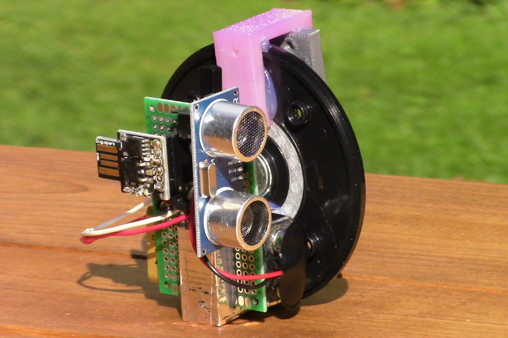

Sundry Projects
The Social Distance Sensor
How can I effectively judge six feet when social distancing? Well, of course I can create a mask mounted range finder that judges distance for me.
Click For More Information
Raspberry Pi Home Web Server

I wanted to learn more back-end web development tools, but I did not want to buy server time. Instead, I decided to turn a Raspberry Pi into a miniature home web server.
Click For More Information
Using a PRUSA i3 3D Printer

According to Wikipedia, the Prusa i3 was the most used 3D printer in the world in 2016. Its low price and wide use has made it one of the most popular desktop 3D printers for both hobbyists and businesses.
Click For More Information
3D Printed LEGO Brick Separator Holster

3D printed Brick Separator Holster for FIRST LEGO League teams and other LEGO enthusiasts.
Click For More Information
3D Printed Case for CASIO DC-810 PDA
Do you use a CASIO DC-810 PDA from 1988? Do you not like its plastic sleeve? Why not 3D print a case?
Click For More Information